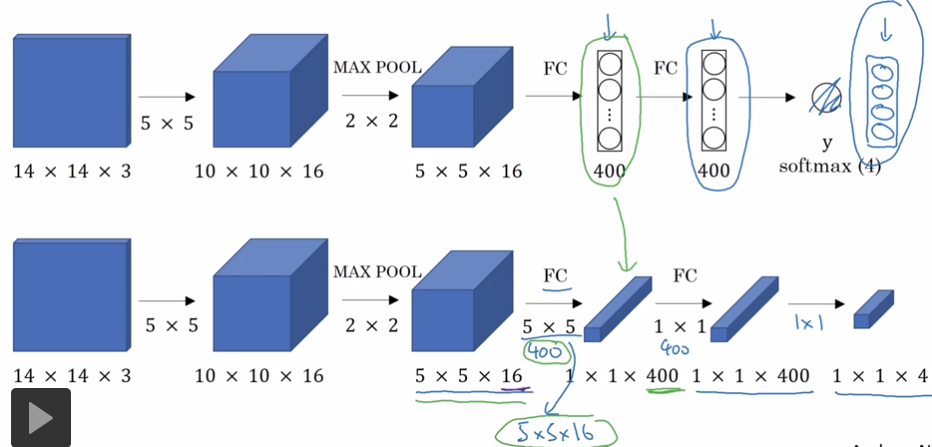
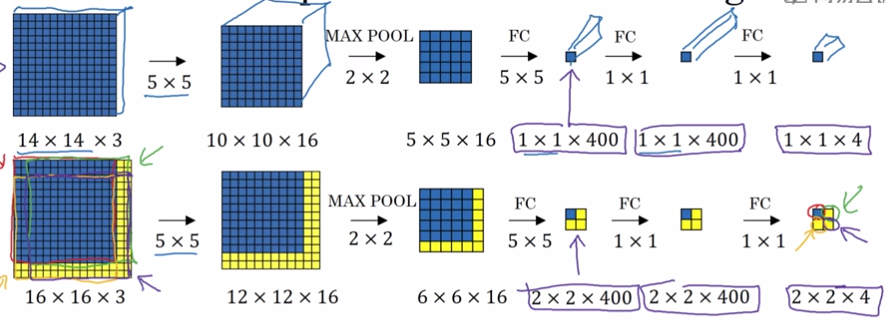
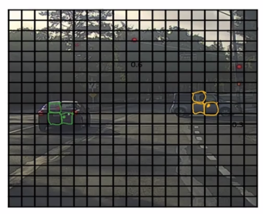
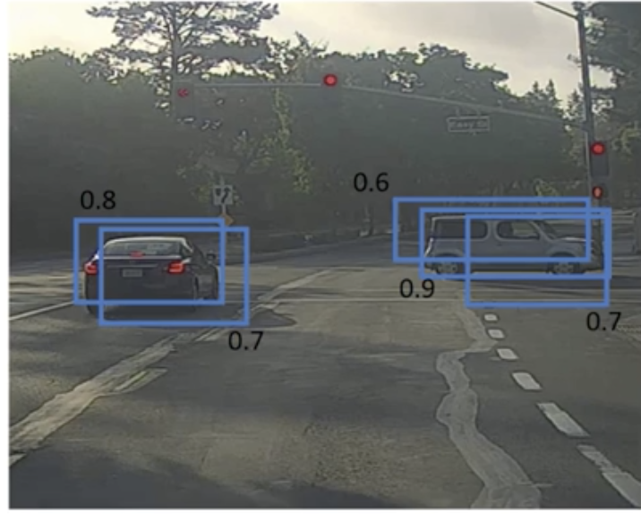
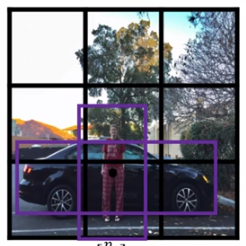
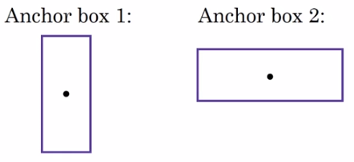
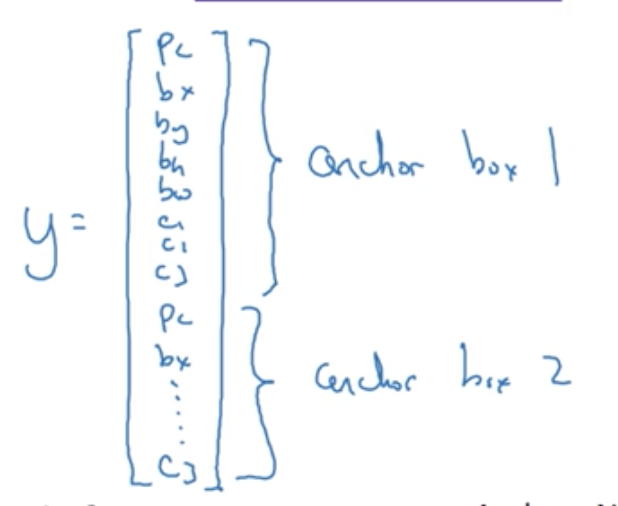

Redom et. al., 2015. You Only Look Once: Unfied real-time object detection
这篇论文比较难。
1. Bounding Box
把原图像切成18 18的格子，每一个格子输出一个与目标定位算法相同的1 8的label。如果某个格子检测到对象，就把对象分配到中心点所在的格子。
输入：n_H n_W n_C
输出：19 19 8
虽然每个格子的输出结果与目标定位算法的输出结果相同，都能检测对象并精确地输出对象的中心点和边界。但是，不是对每一个格子跑一遍目标定位算法，而是用卷积一遍完成。
1.1. 在卷积层上使用滑动窗口算法
- 把网络中的FC层转成1 * 1卷积层。例如：
 - 在卷积层上使用滑动窗口

原理：
不需要把输入图像分割成4个子集分别执行前向传播，而是把它们作为一张图像输入给卷积层进行计算。
其中的公有区域可以共享很多计算。
缺点：
边界框的位置可能不够准确。
1.2. 如何编码bx, by, bw, bh？
每个小格子的坐标都是左上角（0，0）右下角（1，1）。
格子内的坐标都是相对格子左上角（0，0）的。
bx， by的范围是[0, 1]，bw, bh有可能大于1。
以上是比较常规的参数形式。YOLO原文有更复杂、效果更好的参数方法。
2. 对象检测算法的评价 - 交并比
IoU --- Intersection over Union
= (检测区域 交 真实区域) / (检测区域 并 真实区域)
correct if IoU >= 0.5。
3. 非最大值抑制 Non-max suppression
用于保证每个对象只被检测一次。

例如这种情况，多个格子都检测到了目标。出现这样的结果：

- 把所有p_c <= 0.6的box扔掉。
- 找到剩下的报告中，p_c最高的box，把这个box作为输出。
- 其它box如果与这个box重叠，则按照IoU降低它的p_c。若降至0.5以下，则把box扔掉。
- 如果还有剩下的box， go to 2.
如果检测对象分多个类别，分别对每个类别做非最大值抑制。
4. Anchor Boxes

如果两个不同对象的中心点落在同一个格子中。怎样才能把两个对象都表示到y中？
（实际上这种case不常见）。
- 预先定义两个不同形状的anchor box
 - 对两种对象的检测会生成两个label，每个label都是1*8的向量（根据上文定义）。每个label关联一个anchor box。
- 把两个label合并成一个大的label，大小为1 * 16.

实际上两个对象中心点落在同一个格子的case不常见。
anchor box更多的是另一种作用：针对对象有明显特征的情况可以有针对性地识别。
Anchor Box无法handle以下场景：
- 1个grid中的对象数多于box数
- 1个grid中的多个对象属于相同的box
怎样选择anchor box?
- 手工设计， 5-10个
- K-Means算法对形态进行聚类。
5. YOLO算法
把以上的技术全部合起来。
5.1. 训练
标签维度为：19 19 （2 * （1 + 4 + 3））
19: grid数
2：anchor box数
1: pc，用于指示是否存在对象
4：用于指出对象的位置和大小
3：用于指出对象的种类
5.2. 预测
100 100 3 --(ConvNet)--> 19 19 16
用non-max supressed分析输出，每个类别分别作non-max supressed.